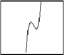
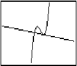
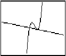
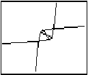
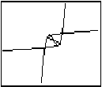

| HOME >> Tutorials >> Tutorial 18: Functions |
Introduction:
In this tutorial, we will learn about the draw commands that are used with functions. These three draw commands have nothing to do with making pictures, but I decided to put them in a tutorial just because they are Draw commands. These commands probably are used in math programs rather than in games. In fact, I have never even used these commands before in any of my programs, so I'll be learning right along with you. Although I haven't used these commands before, they seem pretty straightforward and easy to understand.
New Commands:
| Tangent( | Draws a line tangent to and expression at the value of X |
| DrawF | Draws an expression on the graph |
| DrawInv | Draws the inverse of an expression |
| Tangent(expression,value) | DrawF expression | DrawInv expression |
The Code:
There will only be one code, which will cover Tangent(, DrawF, and DrawInv. Because I don't use these commands often (really not at all), I'm just going to use the example codes that are in the TI-83 Graphing Calculator Guidebook. Because these commands work with functions we'll have to change our window variables back to normal.
| : | For AShell, SOS, and TI-Explorer |
| AxesOff | Turns the graph axes off |
| FnOff | Deselects all the Y= functions |
| -10 |
Stores Xmin as -10 |
| 10 |
Stores Xmax as 10 |
| 10 |
Stores Ymax as 10 |
| -10 |
Stores Ymin as -10 |
| ClrDraw | Clears the graph screen of all drawings |
| "X³-2X²-X+2" |
Stores Y1 as "X³-2X²-X+2" |
| DrawF Y1 | Draws "X³-2X²-X+2" on the graph screen |
| Pause | Suspends program and waits for user to press |
| Tangent(Y1,1.5 | Draws a line tangent to "X³-2X²-X+2" at X=1.5 |
| Pause | Suspends program and waits for user to press |
| ClrDraw | Clears the graph screen of all drawings |
| DrawF Y1 | Draws "X³-2X²-X+2" on the graph screen |
| DrawInv Y1 | Draws inverse of "X³-2X²-X+2" on the graph screen |
 press   press
 press  

Further Explanation:
If you have run the program, y=x³-2x²-x+2 should be displayed on the screen, while the program is paused. Then a line should run across the screen and touch the function where X=1.5, and the program should be paused again. Then the screen should clear and then y=x³-2x²-x+2 should display again and then the inverse of it should be displayed on top of it. Now this code isn't spectacular, but it does show how to use all of the commands. You might be wondering how it can draw Y1 when all the functions where turned off with FnOff. What happens is that all the functions, including Y1 are turned off when the program executes FnOff. Then when "X³-2X²-X+2" is stored into Y1, Y1 is activated and can be displayed. Also, for those people who really know how to use their calculator, or have used it a lot in their math classes may realize that there is one command that'll set the window variables to what we've set them above. That command and all of the other zoom commands are going to be covered in BASIC 83 Guru v3.0.
Conclusion:
As I have already said, these three commands are pretty much useless for our main purpose, which is making pictures. The only command that may be a little helpful is DrawF, but the other two are mainly just for mathematical purposes only. The next tutorial is on creating pictures, which is why we've been learning all of the previous commands in the first place. Pictures are what separate good games from great games.
If you do not understand a particular part in this lesson, have suggestions, or find any problems please contact me.
 |
 |
| Tutorial 17 | Tutorial 19 |